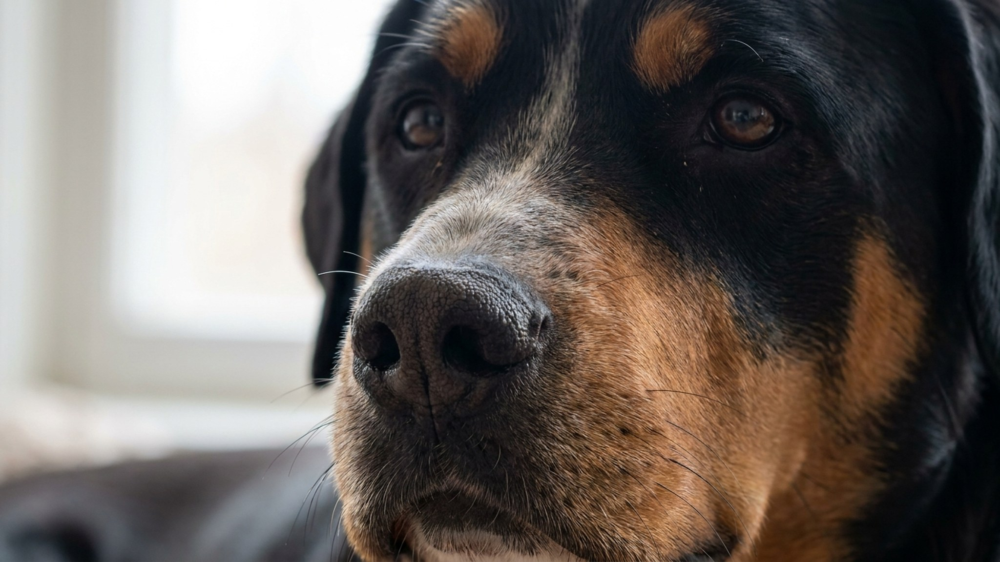

Большой швейцарский зенненхунд весит до 65 кг — и при этом не давит на нервы ни хозяину, ни соседям. Гросс тянул повозки в альпийских деревнях пять веков подряд, а сегодня спокойно живёт в семье с детьми. Но за этим спокойствием — конкретные требования к движению и росту щенка, которые нельзя игнорировать. Ниже — что важно знать владельцу крупной рабочей породы.
🐾 У вас большой швейцарский зенненхунд?
AnimaLife соберёт уход под породу: к каким болезням есть склонность, что проверять по возрасту, чем кормить и когда пора к врачу. Бесплатно, прямо в мессенджере.
Собрать план ухода → Собрать в MAX →
У вас iPhone? AnimaLife есть в App Store
Большой швейцарский зенненхунд — старейший из четырёх зенненхундов. В Швейцарии его использовали как тягловую собаку: запрягали в тележку с молочными бидонами или мясом на рынок. Порода отбиралась на силу, выносливость и управляемость рядом с человеком — не на скорость и не на охрану.
Сегодня гросс — рабочая порода без работы, и это надо учитывать: ему нужна осмысленная нагрузка, а не просто двор побольше.
Большой швейцарский зенненхунд уравновешен и редко реагирует первым — ни на шум, ни на чужих. Агрессия без причины не характерна породе. При этом он не безразличный: следит за хозяином, хорошо чувствует тон голоса, не переносит длительного одиночества.
Гросс — не марафонец, но и не диванная собака. Ему нужны 2 прогулки в день по 40–60 минут с реальной нагрузкой: подъёмы, неровный рельеф, поисковые игры носом. Просто «выйти во двор» для этой породы не работает.
Щенку нагрузку увеличивают постепенно. Крупные породы растут дольше — скелет большого зенненхунда формируется примерно до 18 месяцев. Длинные пробежки и многократные прыжки в этот период лучше исключить: суставы ещё не готовы. После полутора лет объём нагрузки можно наращивать уже без ограничений.
Шерсть у гросса короткая, плотная, трёхцветная — чёрный, белый и рыжий. Уход несложный: расчёска раз в неделю, во время линьки — 2–3 раза. Линяет порода дважды в год, и на две-три недели шерсть появляется везде.
Гросс подходит людям с пространством и временем на прогулки. Идеально — дом с участком, но справляются и в квартире при условии полноценных выходов. Порода для семьи, а не для одиночки на вахте: собака должна быть частью распорядка, а не «жить в вольере».
Не подходит тем, кто рассчитывает на собаку-тень без особых запросов. Щенок крупной породы требует осознанного подхода к росту, режиму кормления и физической нагрузке — эти вопросы лучше обсудить с ветеринаром до того, как щенок окажется дома.
Материал носит информационный характер и не заменяет очную консультацию ветеринара.
🐾 Ваш питомец — большой швейцарский зенненхунд?
Заведите профиль в AnimaLife: приложение запомнит породу, возраст и вес и будет подсказывать по уходу именно для неё. Вопросы AI-ветеринару — круглосуточно и бесплатно.
Завести профиль → Завести в MAX →
У вас iPhone? AnimaLife есть в App Store
🐾 Понравился разбор?
Подпишитесь на канал — каждый день разбираем по одному тревожному симптому у кошек и собак: что в пределах нормы, а когда пора к врачу. Подпишитесь, чтобы не пропустить разбор, который может спасти здоровье вашего питомца.